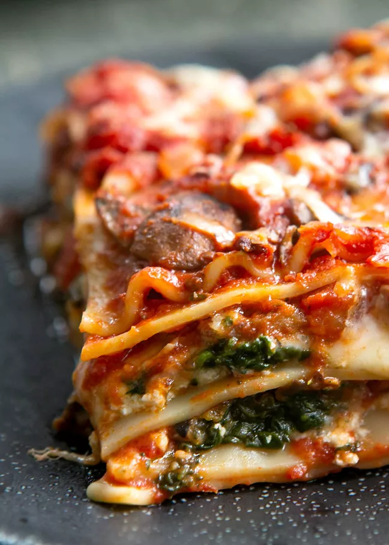

Lasagna

Delicious vegetarian lasagna for the whole family to enjoy! Mushrooms and spinach
fill in for the usual beef in this amazing recipe!
Ingredients!
- Mushrooms
- Spinach
- Pasta
- Cheese
- Marinara
Instructions!
- Put pasta down.
- Put cheese on pasta.
- Put spinach and mushrooms on the cheese.
- Put the marinara over the whole thing.
- Bake it! Somehow, with an oven, maybe.